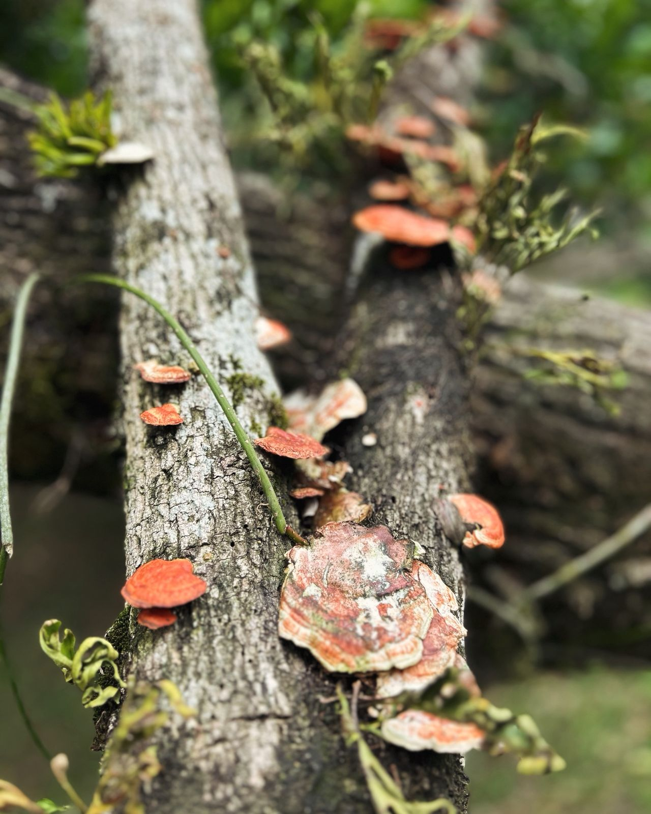
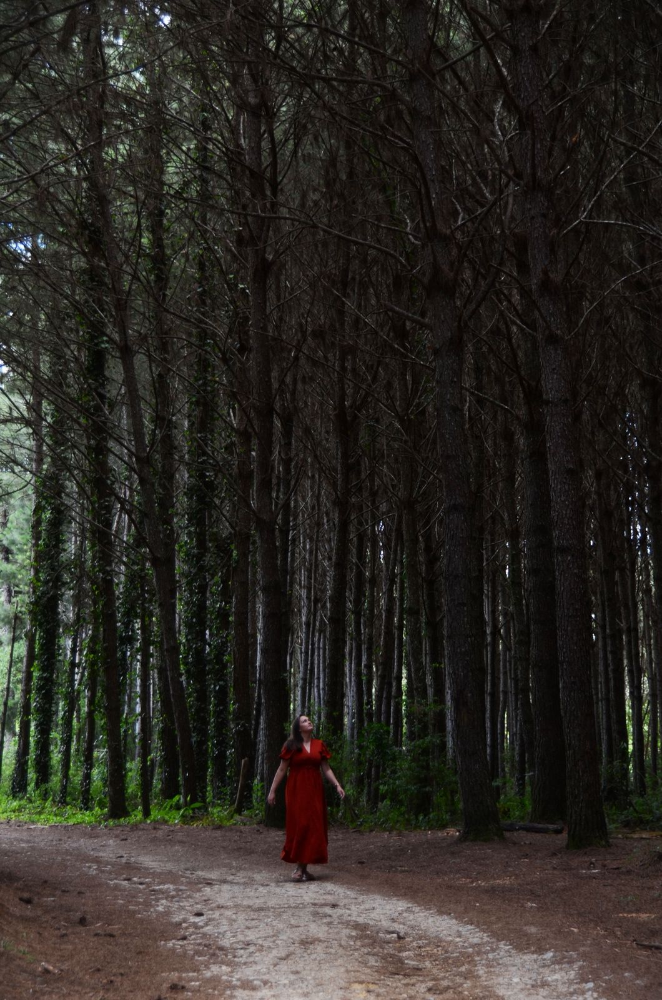

Bem-vindo ao meu site de fotografia!
Com sensibilidade, criatividade e carisma, transformo momentos em memórias eternas"
Sobre Mim
Nascida em Curitiba, cresci cercada pelas ondas do mar na praia e o calor das conxões humanas.
Desde pequena, fui uma criança cheia de vida, carisma e curiosidade, qualidades que hoje se refletem em cada clique, cada história que registro com minha alma
Portfólio
Aqui estão algumas das minhas melhores fotografias.
- 
- 
Contato
Entre em contato comigo para colaborações ou consultas.
Email: franciellel.buba@gmail.com